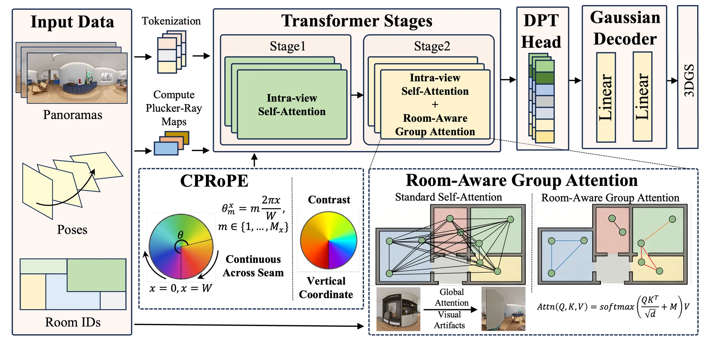
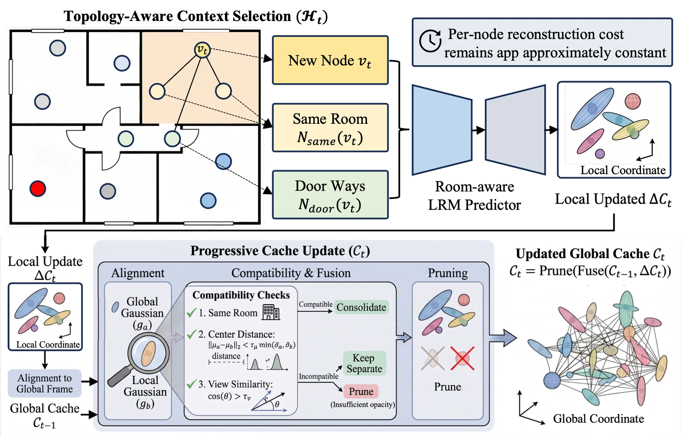
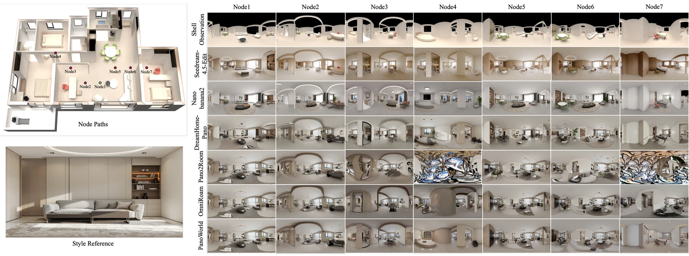
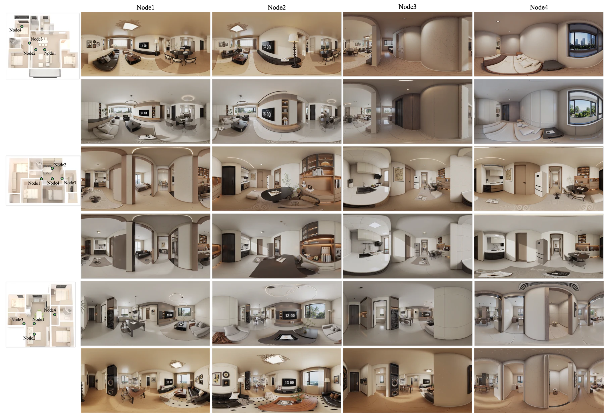
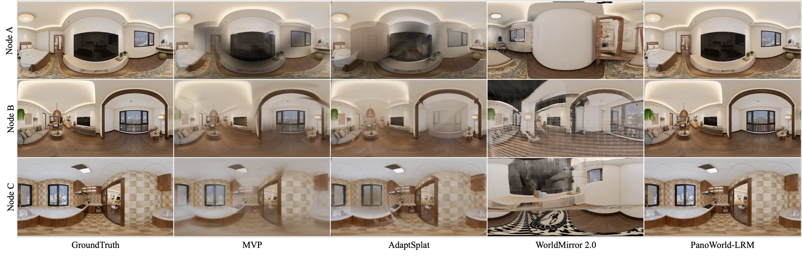

Generating a consistent whole-house VR tour from a floorplan and style reference requires both photorealistic panoramas and cross-view spatial coherence. Pure 2D generators produce appealing single panoramas but re-imagine geometry and materials when the viewpoint changes, whereas monolithic 3D generation becomes expensive and loses fine texture at multi-room scale. We introduce PanoWorld, a generative spatial world model that treats whole-house synthesis as autoregressive generation of node-based 360-degree panoramas, matching the discrete navigation used by real VR tour products. PanoWorld uses a floorplan-derived 3D shell as a global geometric proxy and a dynamic 3D Gaussian Splatting cache as renderable spatial memory. A feed-forward panoramic LRM designed for metric-scale multi-room 360-degree inputs lifts generated panoramas into local 3DGS updates, while Room-aware Group Attention suppresses cross-room feature interference. A topology-aware progressive caching strategy fuses these local updates without repeatedly reconstructing the full history. By decoupling shell-based geometry guidance from cache-rendered visual memory, PanoWorld preserves high-frequency 2D synthesis quality while improving cross-node layout and material consistency.

Room-aware panoramic LRM. Grouped attention allows dense intra-room interaction and restricted cross-room communication only through topological boundaries.

Progressive 3DGS caching. PanoWorld updates spatial memory through local topology-aware increments instead of full history reconstruction.

We compare PanoWorld with representative adapted baselines on multi-node panorama generation.

PanoWorld preserves cross-room geometry and material identity while generating furnished panoramas under different target styles.

The comparison shows room-level panorama renderings for different reconstruction methods.